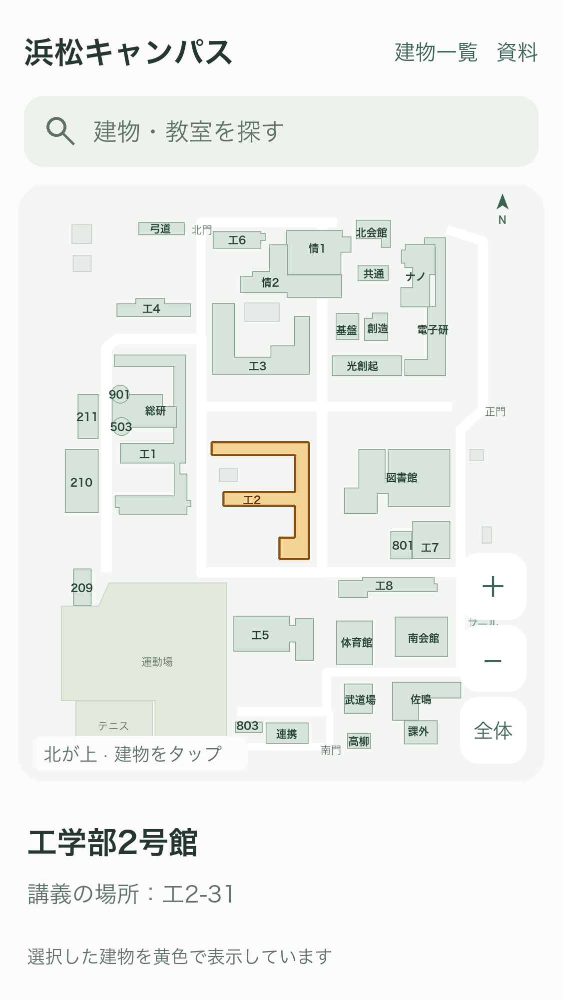

今回の範囲
ホームに地図を表示し、講義の場所から対応する建物を強調した地図を開く。34施設の概略図を同梱してオフラインで使う。今回の直接の指示を、提示済みのキャンパスマップ機能への実装指示として記録。
館内図と経路は今回の対象から外す。現在のホーム・予定・施設・メモ・リンクと保存データを維持する。実装承認・仕様の正本
ホームからキャンパス全体を開き、講義の場所から建物を選択表示する。

場所のタップと予定詳細を分け、元の予定を変えずに確認する。
未登録の場所は全体図と建物一覧へ案内する。
場所の対応が未登録です
建物名を検索して、地図で確認できます。
建物を探す
今回は地図の表示と場所連動を追加する。
受入条件
- CM1：同梱の34施設・形状・名称が一致し、オフライン表示。
- CM2：既知教室と建物名の照合、表記ゆれ/空欄/不明/曖昧で誤選択なし。
- CM3：ホーム・一覧・予定選択カード・詳細の場所から地図へ到達。既存操作も維持。
- CM4：拡縮・移動・全体復帰・一覧・閉じる・文字拡大/読み上げ。館内への入口なし。
- CM5：保存データ保持、CoreテストとSimulatorビルド。実機のみの検証は未確認と明示。
未解決事項
今回の機能選択に回答待ちはなし。未知の場所は未登録として扱う。実機の署名、Outlook接続、機内モード、VoiceOver実操作は別途確認。
実装・確認結果
キャンパスマップをアプリに組込み済み。Core 18テストとSimulatorビルド成功、独立レビューPASS。小画面でホーム・講義の場所・詳細から地図を開く操作、建物強調、拡大・移動・一覧検索・復帰を確認しました。
Simulatorの実画面：工２－３１ → 工学部2号館。上の図版は実装前の画面案です。実機・VoiceOver・文字拡大の実操作は未確認です。詳細は仕様正本の検証記録へ。